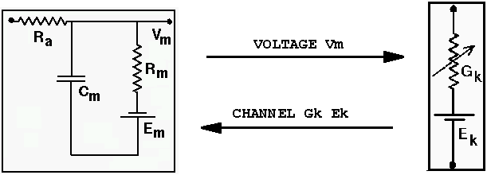
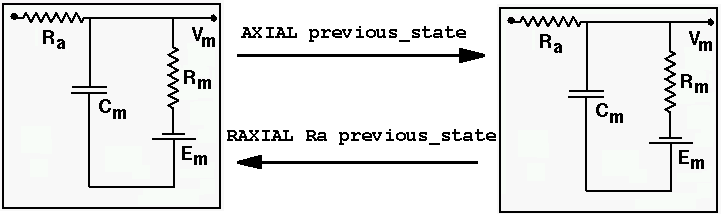

GENESIS messages were introduced in A Basic Tutorial on GENESIS as a way of linking elements. The simulation script tutorial1.g uses the addmsg command to pass the membrane potential of the soma to a graph, using a PLOT message.
Messages are used to establish persistent connections between elements to send information that may change with time. The addmsg command has the form
addmsg source-element dest-delement msg-type [msg-fields]
Here, the source element sends the value(s) of one or more of its fields (the "msg-fields" parameters) to the destination element. At each step of its simulation clock, the destination element acts on the data that is sent, according to the name of the message (the "msg-type"). In order to properly set up a message with addmsg, you need to look at the documentation for the object type used to create the source element, in order to find out the names of the fields that exist and can be sent. Then you need to look at the documentation for the object type of the destination element in order to find out what types of messages it is capable of receiving, and what parameters it expects to receive in the message. The addmsg command should send the corresponding field values of the source element in the proper order.
For example, /cell is made from a neutral object and /cell/soma is created from a compartment object. According to the documentation for compartment, it can receive the messages:
CHANNEL Gk Ek delivers the conductance and equilibrium
potential of channel within the compartment
RAXIAL Ra Vm delivers the Ra and Vm of a compartment
AXIAL Vm delivers the Vm of a compartment
INJECT inject sets the inject field to the message value
EREST Em sets the Em field to the message value
The CHANNEL message is sent from a channel (ionic conductance) to enable the compartment to calculate the current flowing into the compartment through the channel. RAXIAL and AXIAL are used to pass information from adjacent compartments in order to calculate current flow between the compartments. Some messaages, such as INJECT and EREST, simply set the value of fields in the destination element, so that they will be available for calculations during the next processing step.
The funcgen object implements a function generator that produces periodic output. It has various fields for setting the waveform (sine, square, triangular, or constant), frequency, amplitude, phase, and offset. The output waveform appears as the value of the "output" field.
A funcgen element could be used to provide regular trains of injection current pulses to /cell/soma with an INJECT message, with these commands:
create funcgen /funky
// Set it for a square wave of 0.5 nA amplitude, and frequency of 10 Hz.
setfield /funky mode 0 amplitude 0.5e-9 frequency 10
addmsg /funky /cell/soma INJECT output
Note that the name of the parameter sent with the INJECT message is "output" (a field of the source element) , not "inject". This message will send the value of output and use it to set the value of inject in the destination element.
The pulsegen object provides a more general purpose pulse generator. The simplecell2 simulation in the cells/simplecell2 directory uses a pulsegen to provide injection pulses with control over onset delay, pulse width, and interval. The README file for the simplecell2 model tells more about the simulation.
Chapter 14 of the BoG develops the script tutorial3.g to add Hodgkin-Huxley Na and K channels to the single soma compartment that was created in tutorial2.g. The newer version newtutorial3.g is similar, but uses the preferred tabchannel object.
In either case, the channel is created by calling a function in an included file, as described in the "Building a cell the easy way" tutorial. However, instead of using the cell reader to put the channels in the right place in the element hierarchy and to connect them to the soma, the scripts use statements like:
// Create two channels, "/cell/soma/Na_squid_hh" and "/cell/soma/K_squid_hh" pushe /cell/soma make_Na_hh_tchan make_K_hh_tchan pope // The soma needs to know the value of the channel conductance // and equilibrium potential in order to calculate the current // through the channel. The channel calculates its conductance // using the current value of the soma membrane potential. addmsg /cell/soma/Na_hh_tchan /cell/soma CHANNEL Gk Ek addmsg /cell/soma /cell/soma/Na_hh_tchan VOLTAGE Vm addmsg /cell/soma/K_hh_tchan /cell/soma CHANNEL Gk Ek addmsg /cell/soma /cell/soma/K_hh_tchan VOLTAGE Vm

In tutorial4.g, developed in BoG Chapter 15, a dendrite compartment is created, and then connected to the soma with messages like this
/cell/soma /cell/dend

and the GENESIS statements
addmsg /cell/dend /cell/soma RAXIAL Ra previous_state addmsg /cell/soma /cell/dend AXIAL previous_state
In the first message, the dendrite compartment is linked to the soma with a message of the type RAXIAL, and a message link is established whereby two value fields, Ra and previous_state, will be sent from the dendrite to the soma at each simulation step. This allows the soma to calculate the current entering from the dendrite compartment. The previous_state field gives the value of the membrane potential at the previous integration step. We use this field rather than Vm because we want each compartment to update its data fields using data from the previous simulation step.
This establishes the information flow from the dendrite to the soma. In the reverse direction, the dendrite needs to receive the value of the soma's previous membrane potential in order to update its own state. (The dendrite already knows its own axial resistance to the soma, so the AXIAL message need not include information regarding axial resistance.)
The section of this tutorial on Making synaptic connections describes the spike generator that the cell reader adds to the soma. In tutorial4.g, this is accomplished with the statements:
// add a spike generator to the soma
create spikegen /cell/soma/spike
setfield /cell/soma/spike thresh 0 abs_refract 0.010 output_amp 1
/* use the soma membrane potential to drive the spike generator */
addmsg /cell/soma {path}/soma/spike INPUT Vm
The use of the spikegen object is described in the GENESIS Reference Manual section on Synaptic Connections and in the documentation for the spikegen object.